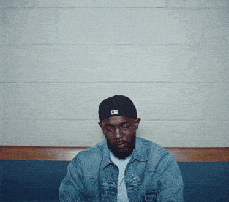

Dobrodošli
Kendrick Lamar Duckworth, rođen 17. lipnja 1987. u Comptonu, Kalifornija, smatra se jednim od najutjecajnijih i najvještijih repera svoje generacije. Njegov uspon od talentiranog tinejdžera pod imenom K-Dot do globalne superzvijezde priča je o predanosti, dubokoj introspekciji i beskompromisnoj umjetničkoj viziji. Ono što Kendricka izdvaja od ostalih umjetnika je njegova sposobnost da spoji komercijalni uspjeh s iznimno složenim društvenim i političkim temama. Kroz svoje albume, on istražuje teme osobnog identiteta, uličnog nasilja, vjere i sustavne nepravde, pretvarajući svaki projekt u "zvučni film".
